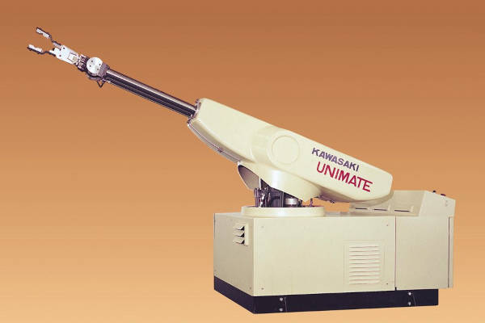

A Robótica é a area da tecnologia responsavel por criar maquinas inteligentes, chamadas de robôs, que podem realizar tarefas de forma automatica.
Ela envolve conhecimentos de computação, engenharia, eletrônica e inteligência artificial.
Embora a ideia de autômatos exista desde a antiguidade, a robótica moderna começou no século XX.
O primeiro robô industrial foi criado em 1961 e se chamava Unimate. Ele trabalhava em uma linha de montagem de automóveis nos Estados Unidos.
Desde então, os robôs evoluíram muito e passaram a ser usados em diversas áreas.
A robótica está presente em diversos setores:
No Brasil, a robótica tem ganhado espaço em escolas, universidades e empresas.
Competições como a Olimpíada Brasileira de Robótica (OBR) incentivam estudantes a desenvolverem projetos inovadores. Além disso, startups brasileiras já criam robôs para o setor agrícola e educacional.
A robótica está avançando rapidamente. Em breve, robôs poderão cuidar de idosos, dirigir veículos com segurança e até participar do ensino em escolas.
Com o uso da inteligência artificial, eles poderão aprender e se adaptar cada vez mais.